目次
GodotのGUIのスキンはThemeで調整する
Godotでは、ボタンなどのGUIのデザインをThemeリソースで設定します。またCSSのように子孫ノードへ設定を継承する機能があります。GUIの親になるControlノードを作成して、それにThemeを設定することでGUI全体のテーマを手軽に入れ替えることができます。
GUIはCanvasItemノードが提供している描画メソッドを使ってコードで描画しています。色の変更をはじめとして、角の丸みを変えたり、枠をつけたり、影を落としたり、斜めにしたりといったことがStyleBoxで設定できます。
試すシーンの作成
以下のような左上にボタンが2つ並んだシーンを作成してThemeの設定を試します。
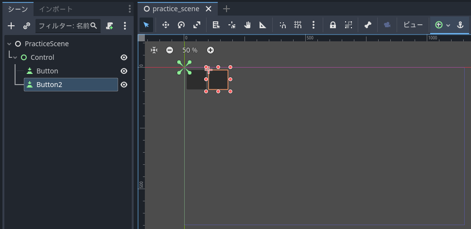
作成手順を簡単に示します。
Controlノード
GUIをまとめるためのControlノードを作成します。
- シーンウィンドウでControlノードを追加します
- Layout ModeをAnchorsに設定します
- Anchors PresetをRect全体に設定します
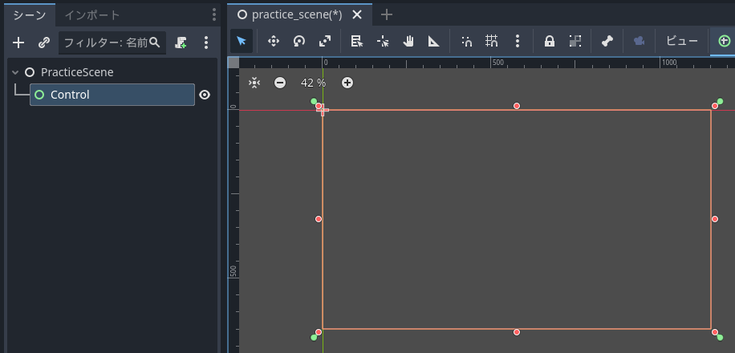
ボタン
Controlの子供にボタンを作成して配置します。
- シーンウィンドウでControlの子供にButtonを作成します
- Layout欄のCustom Minimum Sizeのxとyをいずれも80にします
- Layout ModeをAnchrosに設定します
- Anchros Presetが左上になっていることを確認したら、カスタムに変更します
- Anchor Offsets欄を開いて、Leftを10、Topを10、Rightを0、Bottomを0にします
以上で設定完了です。画面の左上にボタンが配置できました。Anchrosを左上に設定しているので、解像度が変わっても左上からの位置を保ちます。
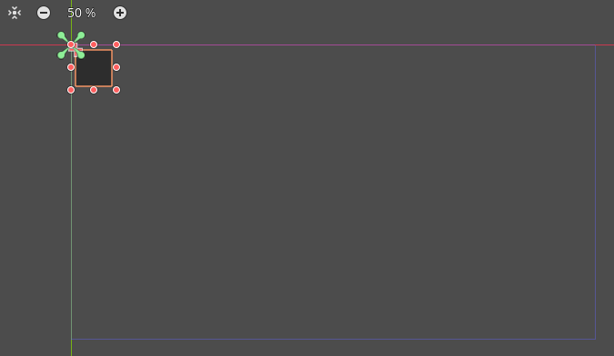
同様に2つめのボタンを作成します。
- シーンウィンドウで作成したButtonを選択して、Ctrl + Dキーで複製します
- Anchor Offsets欄を開いて、Leftを100にします
以上で完了です。画面の左上に2つボタンが並びました。
実行画面です。
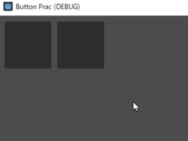
背景が暗いのでちょっと見にくいです。そしてクリックしたあとの白い枠が目立ちすぎる感じがします。Themeで調整していきましょう。
文字や画像の表示
ボタンには文字や画像を表示できます。
文字の表示
文字を描画するにはText欄を利用します。例えばXを入力して閉じるボタン風にします。
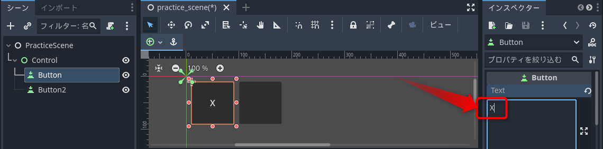
テキストの配列やはみ出た文字を折り返すかなどはText Behaviour欄で設定できます。文字の色や大きさはThemeで調整します。
アイコンの表示
画像を表示したいような場合はIcon欄を利用します。表示させたい画像をプロジェクトに加えて、インスペクターウィンドウのIcon欄をクリックして、クイックロードを選んで表示したい画像を選びます。
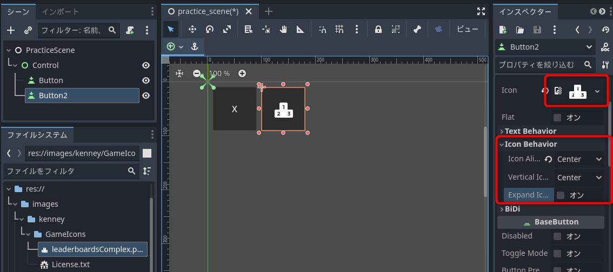
作例はKenney.nlのGame IconsアセットのleaderboardsComplex.pngを設定したものです。
アイコンの配置はIcon Behaviour欄で設定できます。デフォルトは左寄せなのでIcon AlignmentをCenterにして中央に配置しました。Expand Iconにチェックをすると、アイコンの大きさをボタンに合わせてスケーリングすることができます。
Button欄にない設定はThemeで設定します。
Themeの設定
本題のThemeの設定です。作成した2つのボタンを同じスタイルで揃えます。
Themeの作成
親のControlノードにThemeを設定することで、子孫のボタンのテーマをまとめて設定します。
- シーンウィンドウでControlノードを選択します
- インスペクターウィンドウのTheme欄を開いて、右にある下向きアイコンをクリックして、新規Themeを選択します
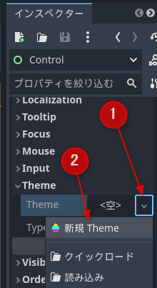
これでControlに新規のThemeが割り当てられました。
テーマエディターを開く
Themeを編集するためにテーマエディターを開きます。
- インスペクターウィンドウで作成したThemeをクリックします
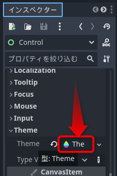
エディターの下部にテーマエディターが開きます。
型（タイプ）を追加する
最初は空のThemeリソースが作成されます。これに設定したいノードの型（タイプ）や派生型を追加してカスタマイズします。Buttonノードの見た目を調整したいのでButton型を追加します。
- テーマエディターの右上の型の右にある+アイコンをクリックします
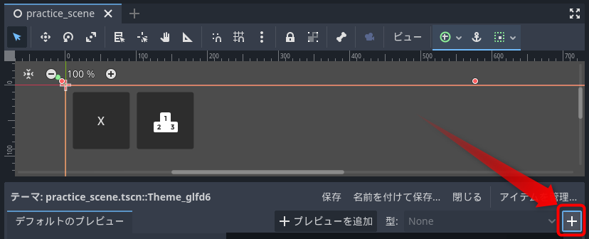
- 検索欄に
buなどと入力してButtonを検索して、選択して、タイプを追加をクリックします
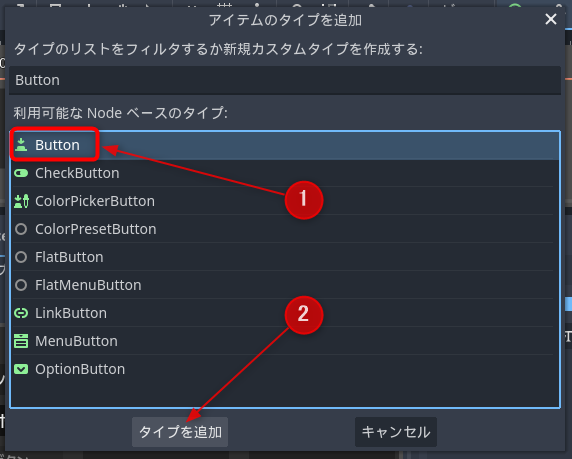
これでThemeにButton用の設定が追加されました。テーマエディターの右側にデフォルトの設定が表示されます。
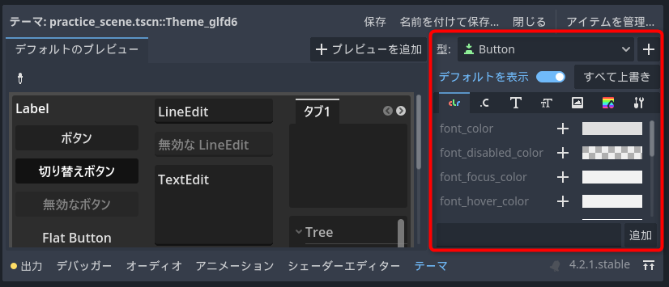
作ったばかりなので設定は空っぽですが、デフォルトを表示が有効になっているのでデフォルト値が表示されます。
テーマアイテム
Themeのパラメーターをテーマアイテム(Theme item)と呼びます。公式ドキュメントに説明があります。
Godot公式マニュアル. User interface(UI)/GUI skinning and themes
文字やアイコンの色、アイコンの最大サイズ、フォント、フォントサイズといったものが調整できます。UIパネルの描画に関するパラメーターはStyleBoxです。これでButtonなどの色や角の丸みなどを調整できます。
normal状態を調整する
ボタンの通常の見た目を調整します。
- テーマエディターで虹色をしているStyleBoxアイコンをクリックします
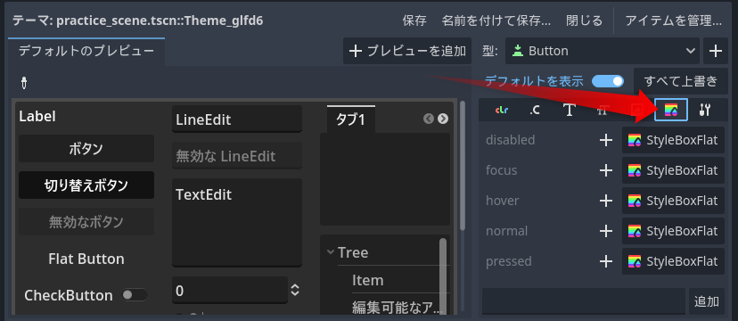
ボタンの状態ごとに描画パラメーターを設定できます。ボタンの状態は以下のようなものがあります。
- disabled：無効時
- focus：クリックやタブでフォーカスを持っている時
- hover：マウスが重なっている時
- normal：通常時
- pressed：クリック時
通常時の色を調整したいのでnormalを編集します。
- normalの右の+をクリックして、上書きを開始します
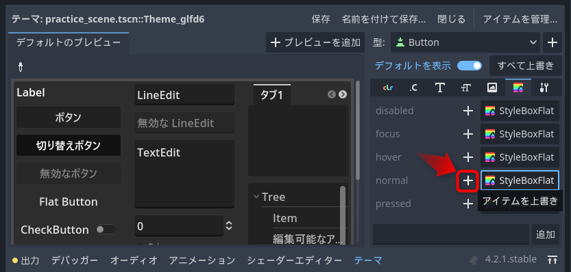
- normalの設定が<空>になるので、クリックして、新規StyleBoxFlatを選択します
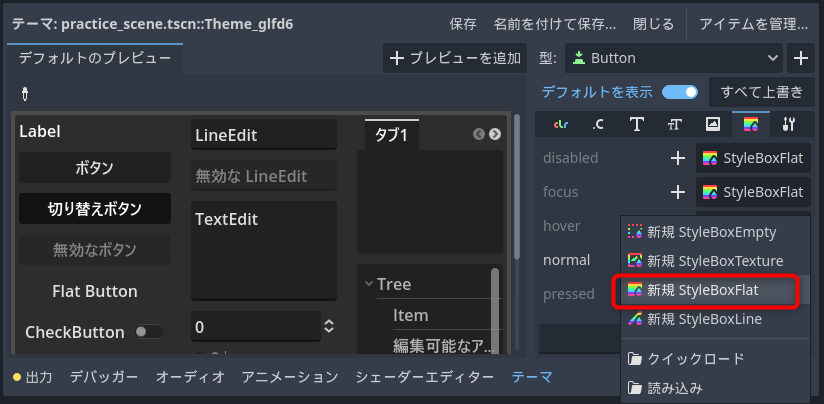
StyleBoxの種類は設定したい項目に応じて選びます。今回はデフォルトのボタンをベースにしたいのでデフォルトと同じStyleBoxFlatを選択しました。StyleBoxEmptyは設定なし、StyleBoxTextureはパネルを画像で描画したい場合、StyleBoxLineは一本線を描くためのもので主にセパレーターで利用されます。
新規StyleBoxFlatを設定したらボタンが灰色の四角になります。テーマエディターの左側のデフォルトのプレビュー欄で動作を確認できます。
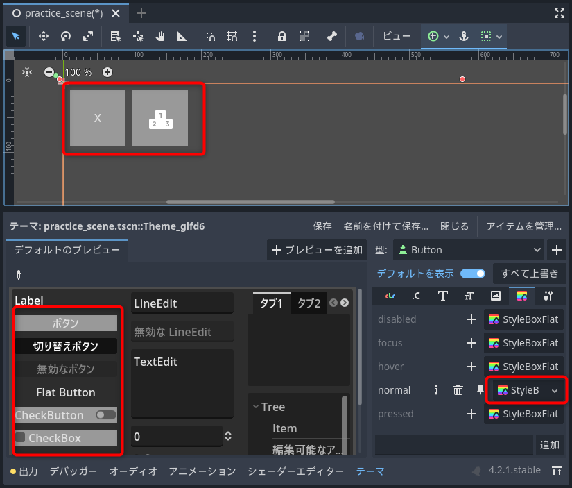
今回は新規の状態から調整するので使いませんが、テーマエディターの右上にあるアイテムを管理でデフォルトなどの他の既存のThemeから型の設定を読み込むことができます。
通常時の色をポップな感じに調整してみます。
- テーマエディターで作成したnormalのStyleBoxFlatをクリックします
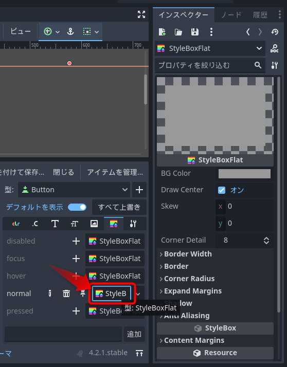
インスペクターウィンドウがStyleBoxFlatの編集画面になります。これを使って見た目を調整できます。
- BG Colorでボタンの色を変更できます
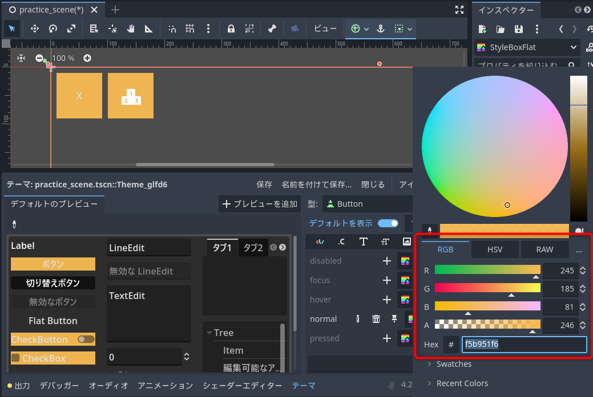
- Draw Centerのチェックを外すと、BG Colorで塗りつぶさなくなります。今回はチェックしたままにします
- Skewは、ボタンの傾きの設定です。楽し気なボタンが作れそうです
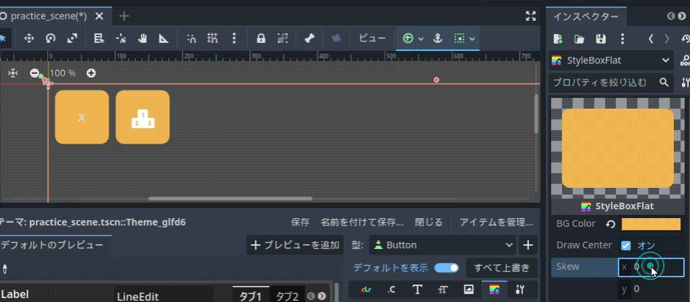
- Corner Detailは、角を丸めるときの分割数です。Corner Radiusとセットで利用します。Corner Radiusが10以下なら4～5、30以下で8～12程度で十分だそうです。1にすると、角が取れたような表現ができます
- Border Widthは、枠線の太さです。0にすると枠なしになります
- Borderは、Border Widthに1以上が設定された時に有効になる枠の色と、枠線をボタンに馴染ませるかどうかのBlend設定があります。枠線を太めにしてBlendを有効にするといい感じのグラデーションの表現ができます
- Corner Radiusは、角の丸みを設定します。個人的に重宝する設定です
- Expand Marginは、ボタンの判定の外に描画を延長する設定です。Border Widthと組み合わせて塗りつぶした感じにする時に利用するようです
- Shadowは、影の設定です。影が簡単に落とせるのは便利そうです
- Anti Aliasingは、アンチエイジングの有無の設定です。パキっとした感じにするならチェックを外します
BG Colorを黄色っぽくして、Corner Radiusを12pxに設定して、以下のような見た目にしました。
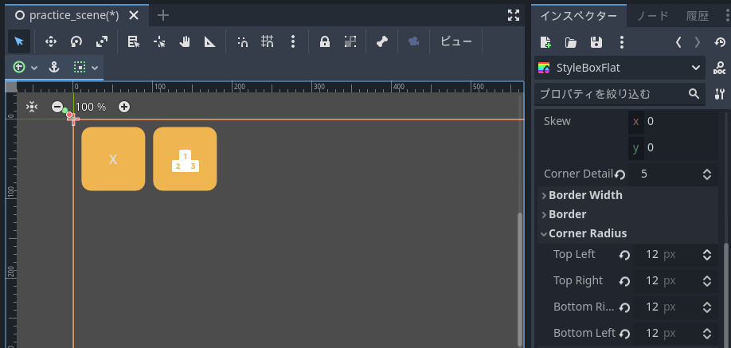
デフォルトのボタンとは大きく見た目が変わってポップな感じになりました。
文字の色が見にくいので、カラー設定からfont colorをもっと白くするのもよいでしょう。色々と調整してみてください。
設定をコピーして調整
基本スタイルができたら、それを元に他の状態を設定します。プロパティのコピー機能が便利です。hoverを設定します。
- hoverの右の+アイコンをクリックして上書きを開始します
- hoverの右の<空>をクリックして、新規StyleBoxFlatを選択します
- normalのStyleBoxFlatをクリックして選択したら、右上のオブジェクトのプロパティを管理アイコンをクリックして、プロパティをコピーを選択します
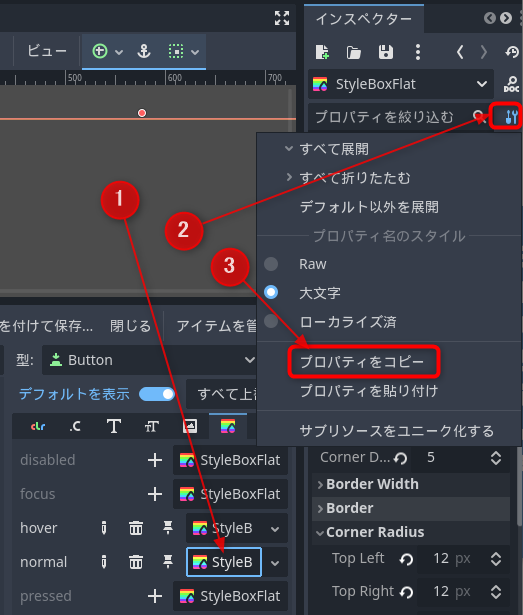
- hoverのStyleBoxFlatをクリックして選択したら、右上のオブジェクトのプロパティを管理アイコンをクリックして、プロパティを貼り付けを選択します
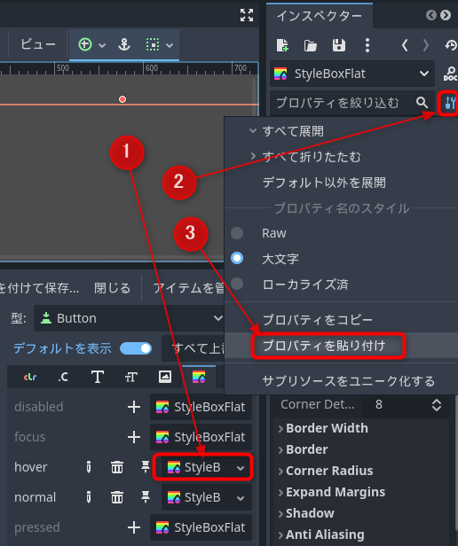
これでnormalのStyleBoxの設定がhoverにコピーされました。BG Colorを少し変えて、マウスカーソルが重なったことを表します。
- テーマエディターが消えていたら、シーンウィンドウでControlノードをクリックして選択します(Godot4.2.1では貼り付けるとテーマエディターが消えてしまうようです)
- hoverのStyleBoxFlatをクリックします
- インスペクターウィンドウでBG Colorを少し変えます
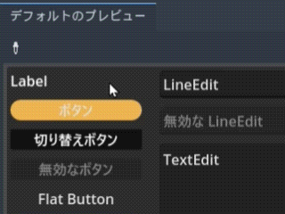
同様の操作でdisabled, focus, pressedも設定します。この方法で設定すれば枠は設定されないので、クリック後に表示されてイマイチな感じを醸し出していた白枠も消えます。
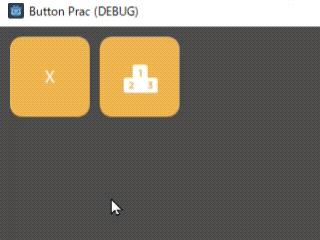
Themeの運用方法
Themeはあちこちに設定できます。
- プロジェクト設定を高度な設定モードにして、GUIのテーマ欄でプロジェクト全体に適用するThemeを設定
- ノードのTheme欄に埋め込みで設定
- ノードのTheme欄にThemeリソースファイルを設定
- ノードのTheme欄のType VariationでType Variationを指定
- ノードのTheme overridesでパラメーターを個別に設定
- Canvas ItemのVisibility欄のModulateとSelf Modulateで色味を設定
今回の作例のように複数のControlに同じスタイルを設定したい場合は、親のControlノードか、プロジェクトの設定のテーマ欄に共通のThemeを設定します。
共通するスタイルがないGUIならノード自身にThemeを設定します。開発を進めるうちに同じスタイルのGUIが出てきたらThemeを保存して使い回します。
ボタンの形や文字は共通でボタンの色だけを変えたいという場合は、変更する項目が複数あるなら新規にThemeを作成して設定、項目が少ないならType Variantが使えます。Theme overridesは設定を使い回せないので試作用だと考えています。
Theme Variantを使えば、Themeリソースファイルの数を減らせるし、親のThemeを差し替えるだけで子孫のテーマも全て入れ替えられるので便利そうなのですが、テーマエディターに難があります。現状のテーマエディターは設定をまとめてコピーしたり型名を変更する機能がなく、またType Variantのプレビューができません。設定作業の手間の面で、現状では個別にThemeを作成した方が効率が良い印象です。
色味の変更だけならCanvas ItemのModulateやTheme overridesを利用する手もあります。ただ設定値を他に使い回せないので、Theme overridesと同様に試作やゲームジャム用の機能だと考えています。
まとめ
Themeを使ったボタンの見た目の調整方法とThemeの運用方法を紹介しました。
Themeを作成してStyleBoxという見知らぬものをいじる必要があるのでとっつきは悪いですが、使い方が分かれば調整できることが多く、画像を使わずにボタンの角を丸められるのはとても便利です。
まとめて設定する場合はノードの親子階層を利用すると便利です。個別の設定はノード自身にThemeを設定するのが現状では運用が楽そうです。Type Variantを使えば一括してスキンの入れ替えができて良いのですが、今のところ設定が面倒で使いにくい印象です。
いろいろと試して良さげなGUIを作成してみてください。